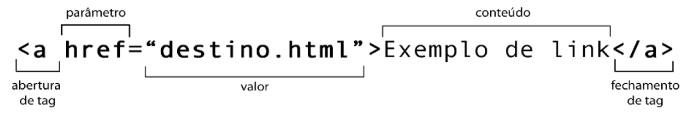
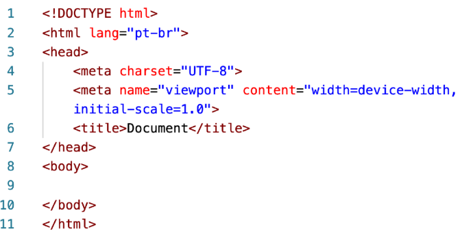

O HTML baseia-se em marcações específicas chamdas tags. Uma tag é um conjunto de palavras entre sinais de cochetes angular "<>"
As tags também podem ter atributos e valores, que vão configurar seu comportamento conforme exemplo:

Uma mesma tag pode ter vários parâmetros, cada um com seu valor. Entretanto, algumas tagas não possuem a necessidade de contúdo interno e por isso não possuem fechamento. É o caso, por exemplo, das tags <br> e <img>.
Com o surgimento da versão 5 da HTML, algumas taggs simplesmente deixaram de existir ou tornaram-se obsoletas ⛔. Uma tag obsoleta pode até estar funcionando no seu navegador hoje em dia, mas a própria W3C - consórcio responsável por manter as especificações da liguagem - recomenda que elas não seja mais usadas pelos profissionais e aos poucos não serão mais suportadas pelos nevegadores nas suas futuras versões.
Sempre que quiser saber quias são as tags que estão sendo consideradas obsoletas pelo W3C, basta consultar a referência oficial da linguagem, disponível no site abaixo e acessar o item 15: Obsolete Features.
→⛔Site W3C
Esta tag devfine o tipo de documento, no HTML5 temos apenas um tipo. É aqui que o navegador entende o tipo de documento e como ele deve interpretar as tags nele contidas. 
Esta tag especifica que a página foi escrita em HTML. Aparece na primeira linha da pagina, sendo utilizada principalmente para mostra que a página usa HTML5
Esta variável "lang=" define qual sera a linguagem utilizada.
Esta é a tag do meta da página. Pode ser útil para mencionar o autor da página, pelavras-chave, datas de publicação original, etc.
Nesta tag ao inserir no href="" o destino de uma imagem (preferêncialmente no formato ico) será definido o icone da barra de navegação.
Esta tag contém o título/nome da página. Você pode ver isso na barra de navegação do navergador para qualquer página aberta. Mecanismos de busca utilizam esta tag para extrair o assunto da página. o que é bastante conveniente para ranqueamento.
Esta tag é utilizada para especificar dados meta sobre a página. Ela inclui o nome da página, suas dependências (JS e scripts CSS), uso de fonte, etc.
Tudo que o usuário vê é escrito dentro desta tag, que contém todos os conteúdos da pagina.
Está tag define a hierarquia de títulos possuindo seis variçãoes desde a <h1> até <h6>.
Está tag cria uma linha horizontal sinalizando o fim da seção. Esta tag quebra as linhas como um paragrafo realizando separações.
Define um parágrafo sendo inserido textos sem formatação dentro desta tag.
Esta tag insere um quebra de linha simples dentro do parágrafo.
A tag (img) é uma tag utilizada para inserir imagens onde dividimos em dois seguimentos: src="será inserido o caminho do arquivo podendo se utilizado os seguintes atalhos Ctrl+Espaço ou ../""
alt="iremos inserir o nome resumido do arquivo"
Podemos utilizar a tag (img) inserindo imagens da internet com a URL conforme demonstrado abaixo
Está tag destaca um trecho do texto em NEGRITO, porém esta tag não e semântica, define apenas a forma sendo utilizada no Html4. Lembrando que forma é aplicado em CSS.
Esta tag destaca o trecho do texto em NEGRITO de forma semântica, sendo recomendado ouso.
Esta tag destaca o trecho em ITÁLICO de forma não semântica, definindo apenas a forma sendo utilizada no Html4
Esta tag destaca o treecho em ITÁLICO de formma semântica, sendo recomendado o uso
Esta tag destaca um trecho na forma de marca texto na cor amarela. Esta cor pode ser mudada com parametro CSS style="background-color:" (prmeira maneira). Se quiser mudar o parâmetro de cor para todas as tags mark recomendo a insersão do parâmetro style dentro do <head> criando um seletor (segunda maneira).
A tag <mark> pode não funcionar por ainda não ser reconhecida pelo vscode.
Esta tag muda o tamanho do texto, porém ela esta obsoleta pela w3. Esta mudança de forma deve ser realizada em CSS.
Esta tag muda o tamanho do texto, está tag apesar de realizar a mudança de forma ainda e utilizada nos casos onde destacamos um texto em linhas pequenas, muito utilizado em anuncios e contratos.
Esta tag deixa um trecho do texto taxado com uma linha horizontal, tal informação pode ser lida deixando claro que esta em desuso.
Esta tag deixa um trecho do texto sublinhado.
Também existe a tag <u> não semântica. Recomendo a utilização da tag <ins>
Esta tag deixa um trexo do texto sobrescrito conforme exemplo: x20+3
Esta tag deixa um trexo do texto subscrito conforme exemplo: H2O